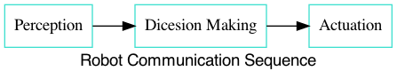
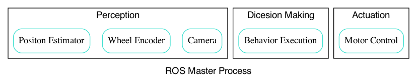
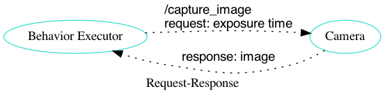

PX4 and ROS Programming Day 1
Table of Contents
- 1. 수업
- 2. 드론 제어 소프트웨어 소개 및 설치
- 3. PX4 소개
- 4. Linux 사용하기
- 5. PX4 개발환경 구성 (+ROS)
- 6. PX4 Firmware Build
- 7. ROS 프로그래밍
- 8. ROS 노드 관리
- 9. ROS 노드 만들기
1 수업
- 목표: 드론 제어 소프트웨어에 대해 이해할 수 있고, 프로그래밍 환경을 구축할 수 있다.
- 교재: https://learn.dronemap.io/
- 코치: 박동희 dongheepark@gmail.com
2 드론 제어 소프트웨어 소개 및 설치
- 워크숍 소개, 참가자 소개
- PX4 소개, ROS 소개
- Linux 사용하기
3 PX4 소개
- https://px4.io/
- Pixhawk
- PX4 Firmware
- Mavlink
- QGroundControl
- https://learn.dronemap.io/px4-workbook/px4-intro.html
- 소프트웨어 아키텍처
- 시뮬레이터 포트 구성
3.1 PX4 미들웨어 및 앱 구조 소개
- 디렉토리 구조 소개
- uORB
- PX4 shell 사용하기
- hello-skyworld
4 Linux 사용하기
- Ubuntu 18.04 설치
- 주요 명령어 소개(파일 조작, 프로그램설치, 쉘스크립트, git)
ls: 파일 또는 디렉토리의 목록을 출력
ls ls -al
cd: 디렉토리 이동
cd ~ cd ~/Downloads
pwd: 현재 디렉토리 출력
pwd
mkdir: 디렉토리 생성
mkdir tmp
rm: 파일 또는 디렉토리 지우기
rm -rf tmp
cat: 파일 입력 또는 출력
cat ~/.bashrc cat > ~/.hello.c
cp: 파일 또는 디렉토리 복사
cp hello.c world.c
chmod: 파일의 퍼미션 지정
chmod +x hello
wget: url에서 파일 다운로드
wget https://google.com
source: 현재 쉘에서 파일을 읽고 실행
source ~/.bashrc
5 PX4 개발환경 구성 (+ROS)
https://dev.px4.io/master/en/setup/dev_env_linux_ubuntu.html
cd ~ wget https://raw.githubusercontent.com/PX4/Devguide/master/build_scripts/ubuntu_sim_ros_melodic.sh chmod +x ubuntu_sim_ros_melodic.sh ./ubuntu_sim_ros_melodic.sh
6 PX4 Firmware Build
- https://dev.px4.io
- Gazebo 사용하기
- Qgroundcontrol
6.1 PX4 v.10.1 다운로드
cd ~ git clone https://github.com/PX4/Firmware.git --recursive cd ~/Firmware bash ./Tools/setup/ubuntu.sh git checkout v1.10.1 git submodule update --init --recursive
6.2 Gazebo 실행
cd ~/Firmware make px4_sitl gazebo
6.3 QGroundControl 사용
다운로드: https://docs.qgroundcontrol.com/en/getting_started/download_and_install.html
QGroundControl 다운로드 및 실행
sudo usermod -a -G dialout $USER sudo apt-get remove modemmanager -y sudo apt install gstreamer1.0-plugins-bad gstreamer1.0-libav gstreamer1.0-gl -y cd ~/Downloads chmod +x ./QGroundControl.AppImage ./QGroundControl.AppImage
7 ROS 프로그래밍
7.1 ROS
- Robot Operating System: 로봇 빌드에 사용되는 라이브러리 어플리케이션 모음 http://www.ros.org/
- 목표: 로봇을 만들때 기존의 재활용 하고 공유하자.
- History:
- 2000s: Standford Artificial intelligence
- 2007: Willow Garage
- 2013: Open Source Robotics Foundation
- 사용 분야: Drone, Kinematic ARMS(로봇암), Wheeled(바퀴), Bi-pedal(이족)
7.2 ROS Nodes and Topics

- Perception: Sense
- Sensor Fusion
- Filtering
- Localization
- Dicesion Making: Decide
- Path Planning
- Prediction
- Behavior Planning
- Actuation: Act
- PID Control
- Model Predictive Control
7.2.1 ROS Master Process
노드 관리

7.2.2 Topics
노드간 통신 인터페이스. 구독 발행의 이름

7.2.3 Publish and Subscribe
발행과 구독. 신문/잡지 발행 구독에 비유
실제 예제

7.3 ROS Message Passing
메시지: 노드간 통신할때 이동하는 실제 데이터
- 메시지는 텍스트로 구성. 메시지를 이해하기 쉽다.
미리 정의된 메시지 타입 :
7.4 ROS Services
- Request-Response, 1:1 통신
- PubSub이 필요 없는 경우 사용, 요청 할때만 데이터가 제공. 네트워크 부하가 적다.
7.4.1 예시: 카메라 이미지 얻기


7.5 ROS Turtlesim
Turtle

7.5.1 Turtlesim 실행하기

- 환경 변수 설정
$ source /opt/ros/melodic/setup.bash
- roscore 실행
- roscore: Master + rosout + parameter server
- Master: 네임 서비스
- rosout: stdout/stderr 로깅
- parameter server: 파라미터 저장 서버
- roscore: Master + rosout + parameter server
$ roscore
- turtlesim 패키지의 turtlesimnode 실행
$ rosrun turtlesim turtlesim_node
- turtlesim 패키지의 turtleteleopkey 실행
rosrun turtlesim turtle_teleop_key
7.5.2 Turtlesim 노드 목록
rosnode list
/rosout : ROS 메시지 로깅.
7.5.3 Turtlesim 토픽 목록
rostopic list
7.5.4 Turtlesim 토픽 정보
rostopic info /turtle1/cmd_vel
7.5.5 Turtlesim 메시지 정보
$ rosmsg info geometry_msgs/Twist geometry_msgs/Vector3 linear float64 x float64 y float64 z geometry_msgs/Vector3 angular float64 x float64 y float64 z
or
rosed geometry_msgs Twist.msg
7.5.6 Turtlesim Echo a Topic
디버깅시 편리
rostopic echo /turtle1/cmd_vel
7.5.7 rqt_graph
rqt_graph

7.6 MavROS
http://wiki.ros.org/mavros mavlink ros wrapper

7.6.1 MavROS 설치 및 실행 (이미 자동설치됨, 안해도됨)
## Create catkin workspace (ROS build system) mkdir -p ~/catkin_ws/src cd ~/catkin_ws ## Install dependencies sudo apt-get install python-wstool python-rosinstall-generator python-catkin-tools -y ## Initialise wstool wstool init ~/catkin_ws/src ## Build MAVROS ### Get source (upstream - released) rosinstall_generator --upstream mavros --rosdistro kinetic | tee /tmp/mavros.rosinstall ### Get latest released mavlink package rosinstall_generator mavlink --rosdistro kinetic | tee -a /tmp/mavros.rosinstall ### Setup workspace & install deps wstool merge -t src /tmp/mavros.rosinstall wstool update -t src rosdep install --from-paths src --ignore-src --rosdistro kinetic -y ### Install GeographicLib datasets ./src/mavros/mavros/scripts/install_geographiclib_datasets.sh ### Build source catkin build ### source setup.bash source devel/setup.bash
환경변수 설정: workspace
cd ~/catkin_ws source devel/setup.bash
mavros_node 실행
rosrun mavros mavros_node _fcu_url:="udp://:14540@127.0.0.1:14557" _gcs_url:="udp://@127.0.0.1"
mavros_node 실행 (다른 방법)
# px4.launch 이용하여 mavros node 실행. fcu ip주소는 192.168.0.xxx roslaunch mavros px4.launch fcu_url:="udp://:14540@192.168.0.xxx:14557" _gcs_url:"udp://@127.0.0.1"
7.7 Gazebo 실행
시뮬레이터의 홈 위치(위도 경도 해발고도) 지정
export PX4_HOME_LAT=35.9012382 export PX4_HOME_LON=128.854495337 export PX4_HOME_ALT=71 make posix_sitl gazebo
8 ROS 노드 관리
8.1 ROS 노드 실행 및 관리
8.2 ROS 노드 토픽 명령 실행하기. (MAVROS 위주)
8.2.1 Subscribe
rostopic echo [topic]
8.2.2 Services
rosservice call [topic] [msg_type] [args]
SET_MODE
# https://github.com/mavlink/mavros/blob/master/mavros_msgs/srv/SetMode.srv # http://wiki.ros.org/mavros/CustomModes # Manual Mode rosservice call /mavros/set_mode "base_mode: 64 custom_mode: ''" rosservice call /mavros/set_mode "base_mode: 0 custom_mode: 'MANUAL'" rosservice call /mavros/set_mode "base_mode: 0 custom_mode: 'POSCTL'" rosservice call /mavros/set_mode "base_mode: 0 custom_mode: 'OFFBOARD'" rosservice call /mavros/set_mode "base_mode: 0 custom_mode: 'AUTO.LAND'"
ARMING
rosservice call /mavros/cmd/arming "value: true"TAKEOFF
rosservice call /mavros/cmd/takeoff "{min_pitch: 0.0, yaw: 0.0, latitude: 47.3977508, longitude: 8.5456074, altitude: 2.5}"
8.2.3 Publish
rostopic pub [topic] [msg_type] [args]
SETPOINT_POSITION
OFFBOARD 모드에서 동작
rostopic pub -r 10 /mavros/setpoint_position/local geometry_msgs/PoseStamped "header: auto pose: position: x: 5.0 y: 0.0 z: 1.0 orientation: x: 0.0 y: 0.0 z: 0.0 w: 0.0"
SETPOINT_VELOCITY
OFFBOARD 모드에서 동작
$ rostopic pub -r 10 /mavros/setpoint_velocity/cmd_vel geometry_msgs/TwistStamped "{header: auto, twist: {linear: {x: 10.0, y: 0.0, z: 0.0}, angular: {x: 0.0, y: 0.0, z: 0.0}}}"
8.2.4 실습
준비: 순서대로 실행
- Gazebo 실행:
cd ~/Firmware; make posix_sitl gazebo - PC의 MAVROS를 PC(127.0.0.1)의 Gazebo와 연결
rosrun mavros mavros_node _fcu_url:="udp://:14540@127.0.0.1:14557" _gcs_url:="udp://@127.0.0.1"
또는 Raspberry PI의 MAVROS를 PC(192.168.88.53)의 Gazebo와 연결roslaunch mavros px4.launch fcu_url:="udp://:14540@192.168.88.53:14557" gcs_url:="udp://@192.168.88.53" - QGroundControl 실행: PX4 Parameter
COM_OF_LOSS_T파라미터 30초로 바꾸기. Failsafe timeout을 30초로 바꾸어야 커맨드라인에서 드론을 조정하기 편하다.
해보기: 커맨드 라인에서 다음 명령을 수행하여, QGroundControl에 아래와 같은 자취를 남겨보자.
- 1. ARM
- 2. TAKEOFF 하고. (옵션)
- 3. 현재 위치를 지정한다.
/mavros/setpoint_position이용하여, (0,0,0) 위치를 10hz로 지정 - 3-1. MODE 변환. OFFBOARD
- 4. 20m 간격으로 정사각형을 따라 움직인다.
/mavros/setpoint_position이용 - 5. HOME 자리에 오면 LAND 한다.
- 6. DISARM

더해보기: 드론의 머리방향이 진행 방향을 향하도록 하자.
- Body 3-2-1 순서 오일러->쿼터니언 변환
변환 코드(python): https://gist.github.com/donghee/e3b4fa8ec789cec0e287bf3b91ddb79e
8.2.5 유용한 mavros 명령(노드) 모음
mavros 패키지의 mavsafety 노드: arm, disarm, safetyarea
rosrun mavros mavsafety arm
mavcmd 노드:
예시: takeoff from current position (10도 각도 피치, 90도 방향 보고, 5m 위로 takeoff)
rosrun mavros mavcmd takeoffcur 10 90 5
예시: home 지정(RTL 위치, 위도 35.9012382 경도 128.85449537 해발고도 71m) google earth: https://earth.google.com/web/search/35.9012382+128.85449537
rosrun mavros mavcmd sethome 35.9012382 128.854495337 71
mavsetp 노드: setpoint 한번 보내기 (setpoint 테스트용, position, velocity, acceleration 가능)
예시: x=1m, y=1m, z=1m, yaw=90도 setpoint 보내기
rosrun mavros mavsetp local -p 1 1 2 90
mavsys 노드: change mode
rosrun mavros mavsys mode -c OFFBOARD
mavparam 노드: parameter set, get, load, dump
예시: 파라미터 덤프
rosrun mavros mavparam dump /tmp/params
mavftp 노드: px4의 파일 시스템 접근
예시: 로그 다운로드
rosrun mavros mavftp download log/2020-08-03/14_37_15.ul
8.3 토픽 레코드: rosbag
리뷰할때 유용
토픽 저장하기
rostopic list -v mkdir ~/bagfiles cd ~/bagfiles rosbag record -O iris_default_1 /mavros/local_position/pose rosbag info iris_default_1.bag rqt_bag
9 ROS 노드 만들기
9.1 새로운 노드 만들기
9.1.1 패키지 만들기
$ source ~/catkin_ws/devel/setup.bash $ cd ~/catkin_ws/src $ catkin_create_pkg drone_control mavros sensor_msgs roscpp
9.1.2 노드 코드 작성
~/catkin_ws/src/drone_control/src/drone_state.cpp
#include "ros/ros.h" #include "sensor_msgs/Imu.h" void imuDataCallback(const sensor_msgs::Imu::ConstPtr& msg){ ROS_INFO("\nlinear acceleration\ \nx: [%f]\ny:[%f]\nz:[%f]", msg->linear_acceleration.x, msg->linear_acceleration.y, msg->linear_acceleration.z); } int main(int argc, char **argv){ ros::init(argc, argv, "drone_state"); ros::NodeHandle nh; ros::Subscriber sub = nh.subscribe("/mavros/imu/data", 1000, imuDataCallback); ros::spin(); return 0; }
빌드 스크립트 추가
~/catkin_ws/src/drone_control/CMakeLists.txt 파일 끝에 다음 3줄 추가
include_directories(include ${catkin_INCLUDE_DIRS})
add_executable(drone_state src/drone_state.cpp)
target_link_libraries(drone_state ${catkin_LIBRARIES})
환경 변수 다시 로드!
$ source ~/catkin_ws/devel/setup.bash
9.1.3 패키지 빌드
$ cd ~/catkin_ws $ catkin build
9.1.4 패키지 노드 실행
drone_control 패키지의 drone_state 노드 실행
$ rosrun drone_control drone_state
9.1.5 해보기: /mavros/state 읽어서 1초마다 비행 mode 한번씩 출력
/mavros/state타입 체크하여 헤더 include
#include "ros/ros.h" #include "mavros_msgs/State.h" void droneStateCallback(const mavros_msgs::State::ConstPtr& msg){ ROS_INFO("\nDrone mode: %s", msg->mode.c_str()); } int main(int argc, char **argv){ ros::init(argc, argv, "drone_state"); ros::NodeHandle nh; ros::Subscriber sub = nh.subscribe("/mavros/state", 1000, droneStateCallback); ros::spin(); return 0; }
9.1.6 해보기 결과:
$ rosrun drone_control drone_state [ INFO] [1539297808.077868114]: Drone mode: OFFBOARD [ INFO] [1539297808.525173697]: Drone mode: OFFBOARD [ INFO] [1539297809.565387356]: Drone mode: OFFBOARD
rqt_graph

9.2 새로운 노드 만들기: 드론 이륙 착륙

drone_control 패키지에 takeoff_and_land 노드를 만들어 보자.
2.5m 이륙후 10초 있다가 착륙
#include <cstdlib> #include <ros/ros.h> #include <mavros_msgs/CommandBool.h> #include <mavros_msgs/CommandTOL.h> #include <mavros_msgs/SetMode.h> #include <geometry_msgs/PoseStamped.h> int main(int argc, char **argv) { int rate = 20; ros::init(argc, argv, "takeoff_and_land"); ros::NodeHandle n; ros::Rate r(rate); ///////////////////ARM////////////////////// ros::ServiceClient arming_client = n.serviceClient<mavros_msgs::CommandBool>("/mavros/cmd/arming"); mavros_msgs::CommandBool arm_cmd; arm_cmd.request.value = true; if (arming_client.call(arm_cmd) && arm_cmd.response.success) { ROS_INFO("Vehicle armed"); } else { ROS_ERROR("Failed arming or disarming"); } /////////////////TAKEOFF//////////////////// ros::ServiceClient takeoff_client = n.serviceClient<mavros_msgs::CommandTOL>("/mavros/cmd/takeoff"); mavros_msgs::CommandTOL takeoff_cmd; takeoff_cmd.request.altitude = 10; takeoff_cmd.request.latitude = 0; takeoff_cmd.request.longitude = 0; takeoff_cmd.request.min_pitch = 0; takeoff_cmd.request.yaw = 0; if(takeoff_client.call(takeoff_cmd) && takeoff_cmd.response.success){ ROS_INFO("Okay Takeoff"); }else{ ROS_ERROR("Failed Takeoff"); } /////////////////DO STUFF/////////////////// sleep(10); ///////////////////LAND///////////////////// ros::ServiceClient land_client = n.serviceClient<mavros_msgs::CommandTOL>("/mavros/cmd/land"); mavros_msgs::CommandTOL land_cmd; land_cmd.request.altitude = 0; land_cmd.request.latitude = 0; land_cmd.request.longitude = 0; land_cmd.request.min_pitch = 0; land_cmd.request.yaw = 0; if(land_client.call(land_cmd) && land_cmd.response.success){ ROS_INFO("Okay Land"); }else{ ROS_ERROR("Failed Land"); } while (n.ok()) { ros::spinOnce(); r.sleep(); } return 0; }
\~/catkin_ws/src/drone_control/CMakeLists.txt 파일 끝에 다음 3줄 추가
add_executable(takeoff_and_land src/takeoff_and_land.cpp)
target_link_libraries(takeoff_and_land ${catkin_LIBRARIES})
- 실행:
rosrun drone_control takeoff_and_land
9.3 새로운 노드 만들기: offb_node
drone_control 패키지에 offb_node 노드를 만들어 보자.
2m 이륙.
/** * @file offb_node.cpp * @brief Offboard control example node, written with MAVROS version 0.19.x, PX4 Pro Flight * Stack and tested in Gazebo SITL */ #include <ros/ros.h> #include <geometry_msgs/PoseStamped.h> #include <mavros_msgs/CommandBool.h> #include <mavros_msgs/SetMode.h> #include <mavros_msgs/State.h> mavros_msgs::State current_state; void state_cb(const mavros_msgs::State::ConstPtr& msg){ current_state = *msg; } int main(int argc, char **argv) { ros::init(argc, argv, "offb_node"); ros::NodeHandle nh; ros::Subscriber state_sub = nh.subscribe<mavros_msgs::State> ("mavros/state", 10, state_cb); ros::Publisher local_pos_pub = nh.advertise<geometry_msgs::PoseStamped> ("mavros/setpoint_position/local", 10); ros::ServiceClient arming_client = nh.serviceClient<mavros_msgs::CommandBool> ("mavros/cmd/arming"); ros::ServiceClient set_mode_client = nh.serviceClient<mavros_msgs::SetMode> ("mavros/set_mode"); //the setpoint publishing rate MUST be faster than 2Hz ros::Rate rate(20.0); // wait for FCU connection while(ros::ok() && !current_state.connected){ ros::spinOnce(); rate.sleep(); } geometry_msgs::PoseStamped pose; pose.pose.position.x = 0; pose.pose.position.y = 0; pose.pose.position.z = 2; //send a few setpoints before starting for(int i = 100; ros::ok() && i > 0; --i){ local_pos_pub.publish(pose); ros::spinOnce(); rate.sleep(); } mavros_msgs::SetMode offb_set_mode; offb_set_mode.request.custom_mode = "OFFBOARD"; mavros_msgs::CommandBool arm_cmd; arm_cmd.request.value = true; ros::Time last_request = ros::Time::now(); while(ros::ok()){ if( current_state.mode != "OFFBOARD" && (ros::Time::now() - last_request > ros::Duration(5.0))){ if( set_mode_client.call(offb_set_mode) && offb_set_mode.response.mode_sent){ ROS_INFO("Offboard enabled"); } last_request = ros::Time::now(); } else { if( !current_state.armed && (ros::Time::now() - last_request > ros::Duration(5.0))){ if( arming_client.call(arm_cmd) && arm_cmd.response.success){ ROS_INFO("Vehicle armed"); } last_request = ros::Time::now(); } } local_pos_pub.publish(pose); ros::spinOnce(); rate.sleep(); } return 0; }
- 실행:
rosrun drone_control offb_node
9.3.1 launch 파일을 이용하여 노드 한번에 실행 (옵션)
roscore, gazebo, mavros, offbnode 노드를 한번에 실행하기 위해서 roslaunch를 이용해보자.
~/catkin_ws/src/drone_control/launch/offb_node.launch 파일에 다음 내용 추가
<launch>
<node name="offb_node" pkg="drone_control" type="offb_node"/>
<include file="$(find px4)/launch/mavros_posix_sitl.launch">
<arg name="vehicle" value="iris"/>
</include>
</launch>
~/.bashrc 파일의 끝에 다음 내용을 추가
환경 변수 추가
PX4_SRC_DIR=$HOME/Firmware source $PX4_SRC_DIR/Tools/setup_gazebo.bash $PX4_SRC_DIR $PX4_SRC_DIR/build/px4_sitl_default > /dev/null export ROS_PACKAGE_PATH=$ROS_PACKAGE_PATH:$PX4_SRC_DIR:$PX4_SRC_DIR/Tools/sitl_gazebo
source ~/.bashrc
catkin build
roslaunch drone_control offb_node.launch
9.4 새로운 노드 만들기: circle
출처: https://github.com/Jaeyoung-Lim/modudculab_ros/blob/master/src/pub_setpoints_traj.cpp
/**
* @file circle.cpp
* @brief offboard example node, written with mavros version 0.14.2, px4 flight
* stack and tested in Gazebo SITL
*/
#include <ros/ros.h>
#include <geometry_msgs/PoseStamped.h>
#include <mavros_msgs/CommandBool.h>
#include <mavros_msgs/SetMode.h>
#include <mavros_msgs/State.h>
#include "math.h"
double r;
double theta;
double count=0.0;
double wn;
mavros_msgs::State current_state;
void state_cb(const mavros_msgs::State::ConstPtr& msg){
current_state = *msg;
}
int main(int argc, char **argv)
{
ros::init(argc, argv, "circle");
ros::NodeHandle nh;
ros::Subscriber state_sub = nh.subscribe<mavros_msgs::State>
("mavros/state", 10, state_cb);
ros::Publisher local_pos_pub = nh.advertise<geometry_msgs::PoseStamped>
("mavros/setpoint_position/local", 10);
ros::ServiceClient arming_client = nh.serviceClient<mavros_msgs::CommandBool>
("mavros/cmd/arming");
ros::ServiceClient set_mode_client = nh.serviceClient<mavros_msgs::SetMode>
("mavros/set_mode");
//the setpoint publishing rate MUST be faster than 2Hz
ros::Rate rate(20.0);
nh.param("pub_setpoints_traj/wn", wn, 1.0);
nh.param("pub_setpoints_traj/r", r, 1.0);
// wait for FCU connection
while(ros::ok() && current_state.connected){
ros::spinOnce();
rate.sleep();
}
geometry_msgs::PoseStamped pose;
pose.pose.position.x = 0;
pose.pose.position.y = 0;
pose.pose.position.z = 2;
//send a few setpoints before starting
for(int i = 100; ros::ok() && i > 0; --i){
local_pos_pub.publish(pose);
ros::spinOnce();
rate.sleep();
}
mavros_msgs::SetMode offb_set_mode;
offb_set_mode.request.custom_mode = "OFFBOARD";
mavros_msgs::CommandBool arm_cmd;
arm_cmd.request.value = true;
ros::Time last_request = ros::Time::now();
while(ros::ok()){
if( current_state.mode != "OFFBOARD" &&
(ros::Time::now() - last_request > ros::Duration(5.0))){
if( set_mode_client.call(offb_set_mode) &&
offb_set_mode.response.mode_sent){
ROS_INFO("Offboard enabled");
}
last_request = ros::Time::now();
} else {
if( !current_state.armed &&
(ros::Time::now() - last_request > ros::Duration(5.0))){
if( arming_client.call(arm_cmd) &&
arm_cmd.response.success){
ROS_INFO("Vehicle armed");
}
last_request = ros::Time::now();
}
}
theta = wn*count*0.05;
pose.pose.position.x = r*sin(theta);
pose.pose.position.y = r*cos(theta);
pose.pose.position.z = 2;
count++;
local_pos_pub.publish(pose);
ros::spinOnce();
rate.sleep();
}
return 0;
}
- 실행:
rosrun drone_control circle
9.4.1 해보기: 원의 너비와 속도를 바꾸어 보자. 힌트 (wn, r)
9.5 과제: 키보드로 OFFBOARD 모드 제어하기
offb_node코드를 참고하여, 키보드로 x,y,z 위치를 제어하여 보자.- 참고: http://wiki.ros.org/teleop_twist_keyboard_cpp